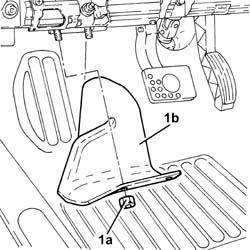
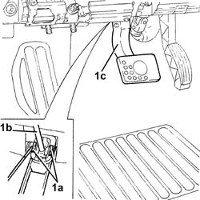
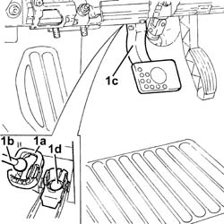
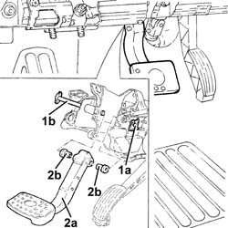
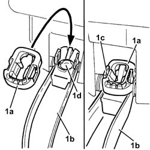

3330B24 BRAKE PEDAL - R R FOR VERSIONS WITH MANUAL GEARBOX WITH HYDRAULIC SELECTION
- Path
- Procedures > 33 BRAKING SYSTEM > 3330 HYDRAULIC BRAKING SYSTEM > 3330B PEDAL UNIT > 3330B24 BRAKE PEDAL - R R FOR VERSIONS WITH MANUAL GEARBOX WITH HYDRAULIC SELECTION
- Kind
- repair procedure (removal / refitting; the operation number is the code)
- Applies to
- engines: 1.8 T.SPARK, 2.0 JTS; all production periods; only with equipment: Smart gearbox
- Interactive page
- https://sloeber94.github.io/elrnDB-aGt/en/#/125001344
Applies to: engines: 1.8 T.SPARK, 2.0 JTS; all production periods
 Removing
Removing
 Refitting
Refitting- Undo the nuts (1a) and remove the protection (1b).

Applies to: engines: 1.8 T.SPARK, 2.0 JTS; all production periods
- Working at the rear of the brake pedal, press the white retaining tabs (1a) securing the brake servo push rod (1b) to the brake pedal (1c).

Applies to: engines: 1.8 T.SPARK, 2.0 JTS; all production periods
- Remove the black retaining device (1a), then release the brake servo push rod (1b) from the brake pedal (1c) and keep the brake servo push rod spherical head housing cover (1d).

Applies to: engines: 1.8 T.SPARK, 2.0 JTS; all production periods
- Remove the clip (1a) and partly release the pin (1b).
- Remove the brake pedal (2a) and bushes (2b).

Applies to: engines: 1.8 T.SPARK, 2.0 JTS; all production periods
Refitting
Removing- Place the brake pedal in its housing, then secure it using the pin and the clip.
- Fit the new retaining device (1a) on the brake pedal (1b) so that the fastening clips (1c) are secured; position the brake servo push rod spherical head housing cover (1d).

Applies to: engines: 1.8 T.SPARK, 2.0 JTS; all production periods
- Lift up the brake pedal and position the brake servo push rod by the retaining device.
- Press the brake pedal to fit the brake servo push rod on the retaining device.
- Fit the protection in its housing and secure it using the nuts.